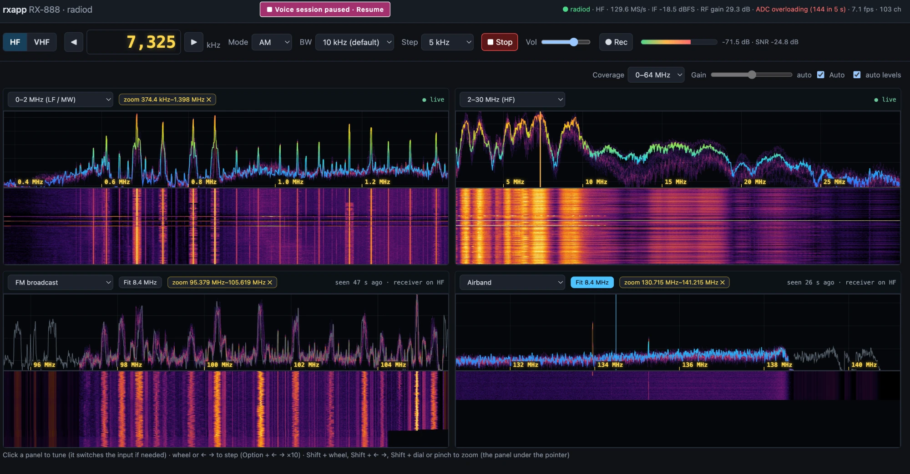
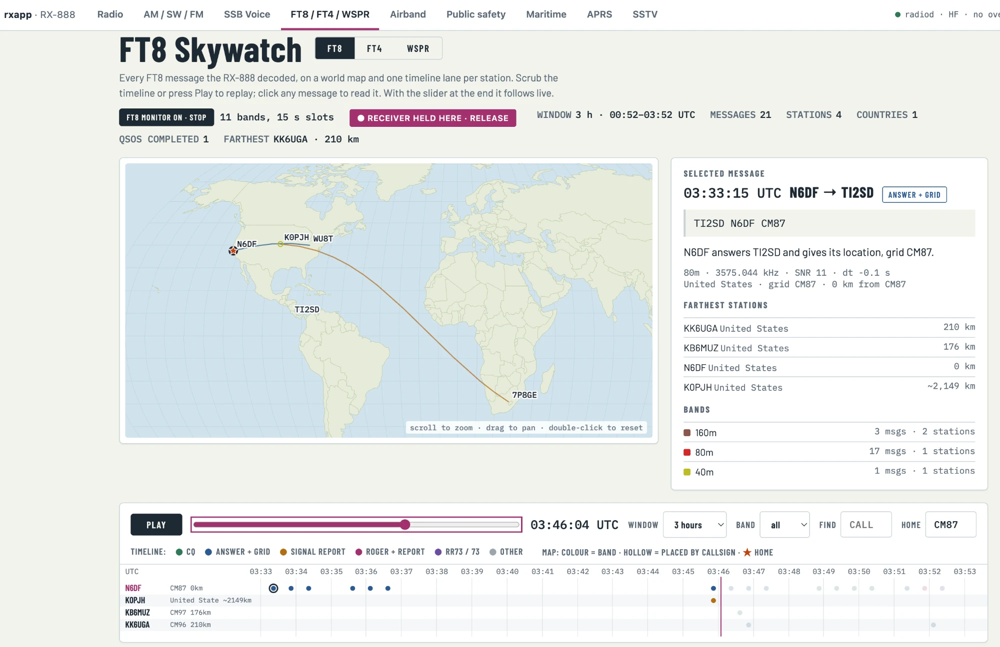
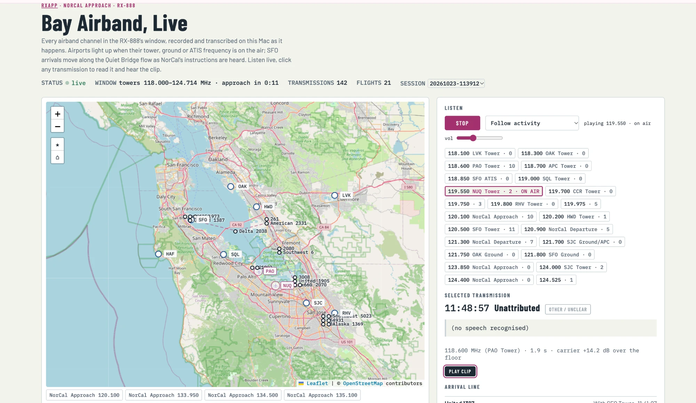

Your RX-888 MkII software-defined radio on a Mac. A browser SDR built on ka9q-radio's
radiod covers HF (0–64 MHz) and VHF/UHF. It decodes FT8, FT4 and WSPR on every HF band at once,
with world maps, and records and transcribes airband and public-safety radio on the Mac itself. It also does
SSB voice, AM / shortwave / FM with stereo, APRS, AIS and SSTV.

Every feature is a tab in the browser. The monitors run on the server, so they keep going with the page closed.
A 2 × 2 grid of spectrum + waterfall panels on any ranges, with zoom, the VHF tuner's window, a bandwidth menu, FM stereo, recording and keyboard / dial control.
Decodes every HF band at once (ft8_lib, wsprd) and shows each station on a world map and a per-station timeline, with band conditions from all three.
Records every channel in the VHF window and transcribes it with on-device Whisper. Shows a live Bay Area map, flights from ADS-B (adsb.fi), and follows whichever channel is talking.
Covers the CHP low band and VHF-high channels, recorded and transcribed, with incident locations geocoded on a map. Kept for 7 days, and never published.
Lists amateur nets, Pacific oceanic aviation and VOLMET, USAF HFGCS and Coast Guard channels, with a voice-band signal check and activity found in the ham bands.
Bay Area AM and FM station lists, plus shortwave broadcasters from the EiBi schedule. FM plays in stereo, with a stereo sign on each station.
AIS ships with AIS-catcher, marine VHF and NOAA weather, APRS stations on a map with multimon-ng, and SSTV pictures decoded as they arrive.
A supervisor restarts radiod after a USB drop. The voice session restores its channels after a restart, and the panels keep their last pictures on disk.
Screenshots and a clip recorded with this code.


Hear one: American 2105 on NorCal Approach, 135.650 MHz. Whisper's transcript:
210 knots and cleared ILS to a right, American 2105
.
You'll need an RX-888 MkII on a USB 3 port, an Apple-silicon Mac with Homebrew, and the
SDDC_FX3.img firmware from the ExtIO_sddc releases. The full steps are in the repository's READMEs
and in AGENTS.md, for coding agents.
http://127.0.0.1:8090.git clone https://github.com/minyaozhu/rx888-radio.git && cd rx888-radio python3 -m venv .venv && .venv/bin/pip install -r requirements.txt ./run_rxapp.sh # starts and supervises radiod, then open http://127.0.0.1:8090